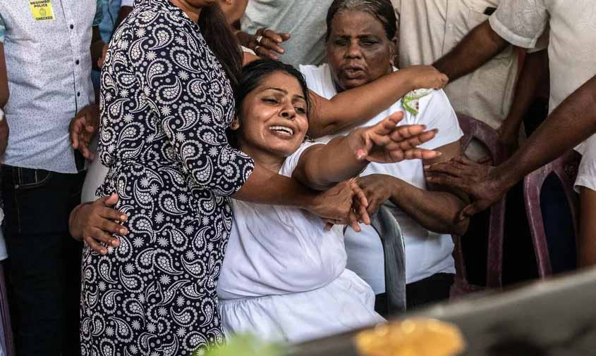

"SWRD Bandaranaike's Sinhala Only Act Divided Communities, Damaged a Generation, and Destroyed 100,000 Lives."
"SWRD Bandaranaike's Sinhala Only Act Divided Communities, Damaged a Generation, and Destroyed 100,000 Lives."
Jaffna Monitor
hellojaffnamonitor@gmail.com
14
In this exclusive interview with the Jaffna
Monitor, Professor Gunaratna discusses Sri
Lanka’s transition into confronting new forms
of threats that affect every citizen, and he out-
lines practical steps needed to enhance safety
and security.
Based on your latest research into
'Sri Lanka's Easter Sunday Massacre:
Lessons for the International
Community,' what are the primary
motivations driving young Sri Lankan
Muslims towards radicalization and
joining groups like the Islamic State?
A tiny percentage of Sri Lankan Muslims
are attracted by the narratives of al-Qaeda,
the Islamic State, and like-minded groups.
They were politicised and radicalised into
embracing an ideology of separation from the
larger Muslim community. During this period,
two anti-Muslim ideologies—ultra-Tamil
nationalism and Sinhala Buddhist exclusivism
and extremism—also emerged. In two phases,
the love and loyalty of a tiny percentage of Sri
Lankan Muslims diminished. They became
vulnerable and susceptible to embracing
extremist and violent ideologies.
Phase One: It all started after Sri Lanka
became an open economy in 1977. Sufism,
a beautiful form of Islam, was gradually
replaced. Sri Lankan Muslims that travelled
to the Gulf countries and to Pakistan brought
exclusivist foreign ideologies that transformed
the Sri Lankan Muslim landscape. They
started to dress like Arabs and Pakistanis, and
a few hundred attacked local and traditional
Muslims, notably in Kathankudi.
Over a decade preceding the Easter attack,
Jamaat-e-Islami, Salafi Wahhabism, and
other foreign ideologies created a wedge
between the Muslims from the non-Muslims.
A tiny percentage of Muslims, especially in
the Eastern Province, were indoctrinated
to oppose local and traditional Islam that
forms a part of Sri Lankan Muslim heritage.
With religious radicalisation, they rejected
and replaced the Sri Lankan Muslim heritage
largely characterised by Sufism with their
brand of Islam. A new social and cultural
milieu prepared the ground to embrace vicious
ideologies that would hurt and harm the
larger Muslim community and then the non-
Muslims.
Phase Two: With deepening religious
radicalisation, a small percentage of Muslims
started to believe that al-Qaeda, the Islamic
State, and similar groups are Islamic
movements promoting puritanical Islam.
According to the Islamic State, about 1,500
Muslims were influenced and indoctrinated by
these foreign ideologies. They joined the rank
and file of the Islamic State.
Jamaat-e-Islami student wing national
organiser Sadiq Abdul Haq travelled to Iraq
and trained with an al Qaeda associate group.
After returning, he joined the Islamic State
together with his brother Sadiq Abdul Haq,
"SWRD Bandaranaike's Sinhala Only
Act Divided Communities, Damaged a
Generation, and Destroyed 100,000 Lives."
Jaffna Monitor hellojaffnamonitor@gmail.com 15 and their followers attacked the Buddhist, Hindu, and Christian images. With two dozen followers and family members, Nilam, who married into a Salafi Wahhabi family, travelled to Iraq and Syria and died fighting. Nilam's father-in-law founded All Ceylon Tawheed Jamaat, another Salafi Wahhabi group that is still functioning in Colombo. Not a single Sri Lankan Sufi joined either al-Qaeda or the Islamic State. Operating both physically and virtually, these groups recruit Muslims radicalised by these foreign ideologies that have now taken root in Sri Lanka. How are these radical groups still successfully recruiting members within Sri Lanka despite increased scrutiny and counter- terrorism efforts? Sri Lankan security forces have developed competencies to fight terrorism at the operational and tactical levels. When confronted with religious exclusivism and extremism, the threat must be addressed at a strategic level. This means dismantling the ideologies by reviewing what the clerics preach, scrutinising the syllabi of the madrasahs, and monitoring the online platforms that radicalise Muslims to hate non-Muslims and vis-a-versa. To address the threat at a strategic level, the Government should build a partnership with Muslim political, religious, and community leaders. Religious violence and terrorism stem from the indoctrination of the community. As such, to protect the religious space, mainstream Muslim elders, elites, clerics, and leaders have a much bigger role to play than government security forces. Without subscribing to conspiracy theories, Muslim leaders should do the following: First, implement the recommendations of the Presidential Commission of Inquiry into the Easter Sunday attacks. Second, identify, select, and train the best and the brightest clerics from All Ceylon Jamiyyathul Ulama (ACJU) to visit the terrorists in custody and the extremists released on bail and start to mainstream their deviant thinking. Third, community engagement programs should be established to build and enhance relations between Mosques, churches, Buddhist temples, and kovils. Fourth, engage far-reaching Muslim religious leaders to protect their religious space, a precious treasure, by reintroducing local and traditional religion. Fifth, build Harmony Committee in every province, Harmony centres in every district, and harmony clubs in every University and school to
Jaffna Monitor hellojaffnamonitor@gmail.com 16 promote intercultural relations. Sixth, create a dedicated Joint Information Warfare Centre to monitor and rebut the radical and violent ideologies coming from the misinterpretation of all faiths radicalising Sri Lankans. Seventh, build a Presidential Council of Religious leaders to promote moderation, tolerance, and coexistence within their communities. In your opinion, has the Sri Lankan government effectively addressed the root causes of radicalisation? What gaps do you see in their current strategy? The first step to preventing and counter- radicalisation is understanding the changing regional and global threats. Before the introduction of virulent foreign ideologies, Sri Lankan Islam was described as idyllic. Sri Lankan Islam coexisted with all the other communities until foreign ideologies with funds from the Gulf established a footprint in Sri Lanka. This has happened not only in Sri Lanka but in many countries. Instead of being an exception, Sri Lanka should address the ongoing drift away from Sri Lankan Islam. There is a protocol to prevent and counter the radicalisation of Muslims. To curb violence and terrorism, the most intelligent approach is not to act after an attack happens. It is to prevent the radicalisation of innocent Muslims into exclusivism, extremism, violence, and terrorism. The strategy is to build social cohesion between Muslims and non-Muslims. The gap has widened between Muslims and non-Muslims after the introduction of Jamaat- e-Islami, Salafi Wahhabi, and other foreign ideologies. A relative of an Easter attack victim mourns during the funeral. The Easter Sunday attacks on April 21, 2019, were a series of coordinated bombings targeting churches and hotels across Sri Lanka, resulting in the tragic loss of over 270 lives and injuring more than 500 people.
